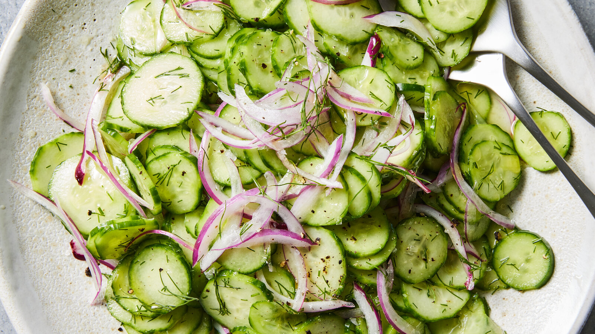

Cucumber Salad

A quick, refreshing salad that cools rich, crispy or spicy dishes — peeled in alternating strips and salted to drain for maximum flavor.
1 lbcucumbers (about 6 Persian or mini seedless, or 1 English)3 tbspvinegar (red or white wine, rice or Sherry)1½ tsphoney or granulated sugar½small red onion, thinly sliced and rinsed under cold water2 tbspchopped dill- salt and black pepper
Peel the cucumbers in alternating strips and trim ends. If desired, halve lengthwise and scoop out the seeds. Thinly slice, then transfer to a colander set in the sink. Toss with 1 tsp Diamond Crystal kosher salt or ½ tsp fine sea salt and set aside to drain at least 5 minutes or up to 30.
In a medium bowl, stir together the vinegar and honey until the honey is dissolved. Shake the cucumbers in the colander to get rid of any moisture, then transfer the cucumbers, red onion and dill to the bowl. Stir to combine, then season to taste with salt and pepper.